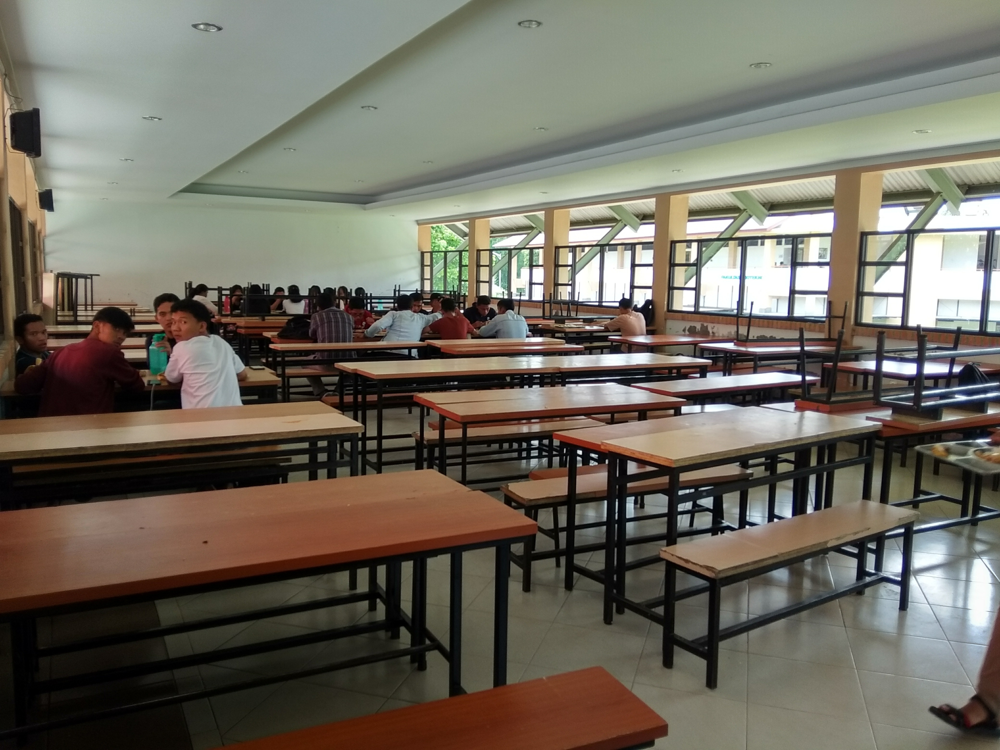

Institut Teknologi Del
Home
(current)
Informasi
Jadwal
Lainnya
Galeri
Kelompok 2 D3 TK
KANTIN IT DEL
Jadwal Di Kantin IT DEL
JADWAL

Senin, Rabu dan Kamis
Makan Pagi :Pukul 07:15 – 07:30 WIB
Makan Siang :Pukul 12:15 – 12:30 WIB
Makan Malam:Pukul 19:15 – 19:30 WIB
Selasa dan Jumat
Makan Pagi :Pukul 07:15 – 08:30 WIB
Makan Siang :Pukul 12:15 – 12:30 WIB
Makan Malam:Pukul 19:00 – 19:30 WIB
Sabtu
Makan Pagi :Pukul 08:00 – 09:00 WIB
Makan Siang :Pukul 12:00 – 13:00 WIB
Makan Malam:Pukul 19:15 – 19:30 WIB